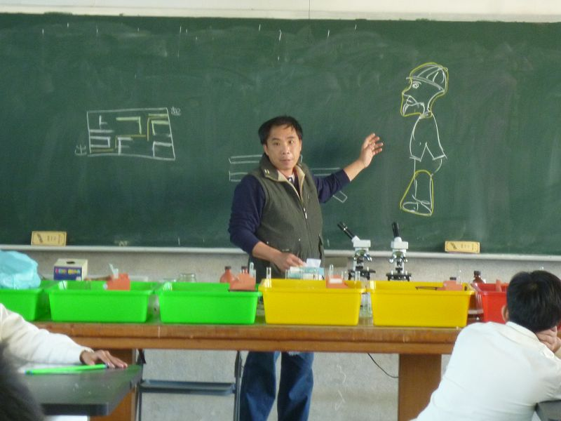

↑Teacher Huang is attentively teaching students about the making of shadow puppetry.|
|
Plan > Vision When Teacher Huang was young, he set up the goal to become a teacher because he knew the best time in his life would be when he passes on his knowledge and sees his students’ smiling faces.
These are things he has experienced from the society since his youth. He wants to promote this place, his hometown – Hsienhsi. (The text and pictures on these pages were based on interview transcriptions, photographs and writing taken by the project team)
|
Hsien-Hsi Junior High School, Changhua County, Taiwan |